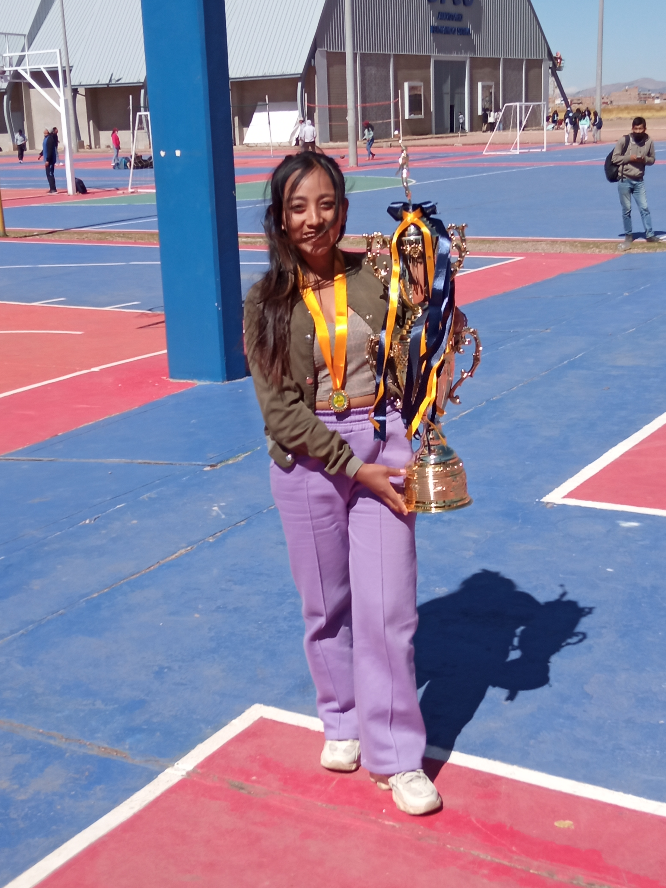
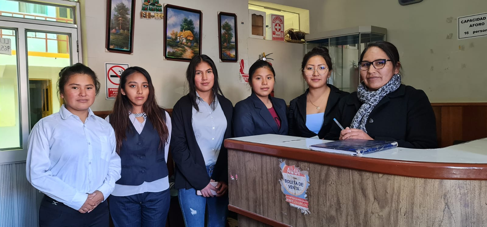
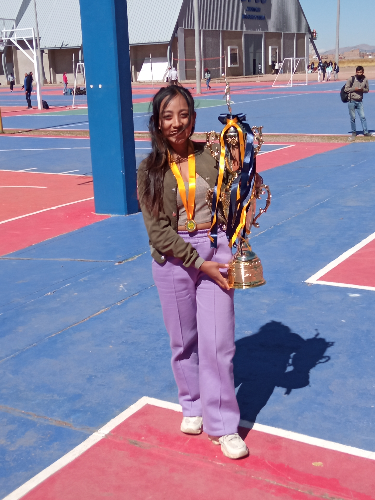
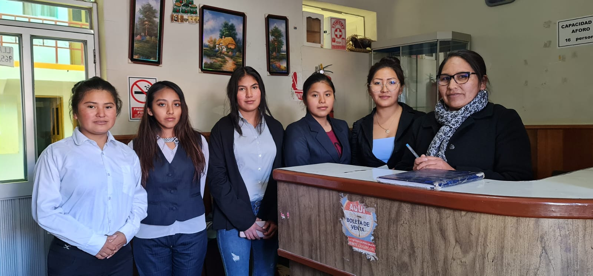

Inicio
¡Hello! Bienvenidos a mi página web personal. Aquí encontrarás información sobre mis proyectos, habilidades y mucho más.
¡Hello! Bienvenidos a mi página web personal. Aquí encontrarás información sobre mis proyectos, habilidades y mucho más.
Me llamo Zandra Cuevas Flores. Soy administradora de Negocios Internacionales con especialización en gestión financiera. Durante mi carrera, he trabajado en la gestión de proyectos financieros, proyectos de empadronamiento y SIS (SISFOH) y optimización de recursos empresariales para diversas compañías del sector privado y público. He liderado equipos multidisciplinarios en la implementación de estrategias de crecimiento, gestión de riesgos y mejora continua, logrando incrementar la rentabilidad y eficiencia operativa de las organizaciones con las que he colaborado. Con más de 7 años de experiencia en el área de administración y finanzas, he desarrollado habilidades sólidas en análisis financiero, planificación estratégica y gestión de recursos humanos, contribuyendo al éxito de proyectos empresariales que han impactado positivamente los resultados de las empresas. A lo largo de mi trayectoria, también he tenido la oportunidad de especializarme en gestión del cambio organizacional, lo que me ha permitido apoyar a diversas compañías en procesos de reestructuración interna y adaptación a nuevas dinámicas de mercado.
1.Modernización del Sistema de Gestión Administrativa Municipal-Amantani.
2.Programa de Presupuesto Participativo.
3. Optimización de Recursos Financieros Municipales-Amantani.
Aquí podrás ver algunos de los proyectos visuales en los que he trabajado:
 



Si deseas contactarme, puedes enviarme un correo a: cuevasfloreszandra@gmail.com o llamarme al 949117761.

Aquí puedes descargar proyectos: